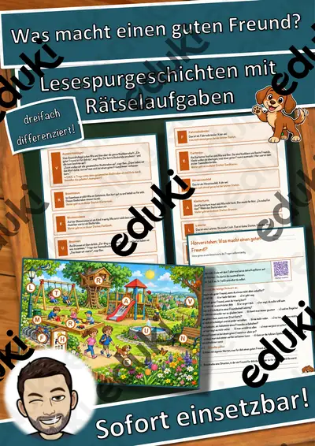

Lesespur: Ramadan und Zuckerfest – Lesespurgeschichte mit Rätseln (Klasse 4)
Ramadan und Zuckerfest – Lesespurgeschichte Ethik (Klasse 4)Schick deine Klasse auf eine Lesespur durch ein Wohnviertel am letzten Abend im Ramadan! Hanna ist zum ersten Mal bei ihrem Freund Yusuf zum Fastenbrechen eingeladen, Bruder Selim und Oma Emine sind dabei – Maskottchen ist die Laterne Nuri. Vom Schultor über Wohnzimmer, Marktstand, Konditorei, Moschee, Treppenhaus und Balkon bis zum Esstisch führt der Weg. Am Ende jedes Abschnitts verrät ein Hinweis den nächsten Ort auf dem Plan – nur wer genau liest, findet den Weg und sammelt alle geheimen Buchstaben zum Lösungswort.
Die passende Lesespur für Ethik in Klasse 4 (auch 3 und 5) – ideal im Februar und März zu Religionen und Festen, Begegnung und Respekt, für Stationenlernen oder Vertretungsstunden. Ohne Marken. Geeignet für die Grundschule. Das Material ist SOFORT EINSETZBAR und in DREI DIFFERENZIERUNGSSTUFEN (leicht ★ / mittel ★★ / schwer ★★★) angelegt.WICHTIG: Das komplette Material ist sowohl in FARBE als auch in SCHWARZ-WEISS enthalten – ideal zum Sparen von Druckkosten.DAS IST ENTHALTEN
- Lesespurgeschichte in 3 Niveaus (leicht, mittel, schwer)
- farbiger Plan des Wohnviertels als Suchkarte
- Hörverstehen mit QR-Code zur MP3 (selbstständiges Hören mit Kopfhörern)
- vier Aufträge auf dem Weg: eine Zuordnung, eine Rechenaufgabe am Marktstand, ein Quiz und ein Steckbrief
- Rätselseite (Wörter-Suchsel + Rätselfragen rund um den Ramadan)
- Ausmalbild zum Thema
- ausführliches Lösungsblatt für die Lehrkraft mit allen Lösungen (Lesespur, Aufträge, Hörverstehen, Rätselseite)
- alles zusätzlich als komplette Schwarz-Weiß-VarianteSO GEHT DIE LESESPURDie Schülerinnen und Schüler lesen ab START, finden im Text den nächsten Ort, suchen ihn auf dem Plan und lesen bei dieser Station weiter. An jeder richtigen Station gibt es einen Buchstaben. Eingeplante Sackgassen (Bushaltestelle, Spielplatz, Blumenladen, Kiosk) sind keine Stationen und dienen der Selbstkontrolle. Am Ende werden die gesammelten Buchstaben umgestellt und ergeben ein geheimes Lösungswort. (Die Lösungen sind selbstverständlich nur im Lösungsblatt für die Lehrkraft enthalten.)INHALTLICHER SCHWERPUNKTDer Fastenmonat im islamischen Mondkalender, die Mondsichel, Fasten von der Morgendämmerung bis zum Sonnenuntergang und wer nicht fasten muss, Sahur und Iftar, Datteln und Wasser zum Fastenbrechen, die fünf Säulen, Teilen und Spenden, das Zuckerfest mit Besuchen, Süßigkeiten und dem Handkuss für die Älteren.ABGEDECKTER LEHRPLAN (Klasse 4)
- Ethik – Religionen und Feste: Ramadan und Zuckerfest im Islam kennenlernen und respektvoll begegnen (Rahmenplan Grundschule Rheinland-Pfalz; Bildungsplan Baden-Württemberg Ethik/Religion 3/4).
- Mathematik – Malnehmen, Addieren und Subtrahieren im Zahlenraum bis 100.
- Deutsch – Sachtexte sinnentnehmend lesen; einem Hörtext gezielt Informationen entnehmen (Hörverstehen mit MP3).Geeignet für Freiarbeit, Stationenlernen, Vertretungsstunden, Wochenplan und als Einstieg ins Thema.
Ähnliche Materialien

Zuckerfest Lückentext mit Wortspeicher Hörverstehen und Suchsel

Ramadan Lückentext mit Wortspeicher Hörverstehen und Suchsel

Moschee Lückentext mit Wortspeicher Hörverstehen und Suchsel

Lesespur: Essen verbindet: Speiseregeln und Fasten in den Religionen – Lesespurgeschichte mit Rätseln (Klasse 5)

Materialpaket Herbst-Lesespuren für die 3. Klasse: 7 Lesespurgeschichten mit Rätselaufgaben (Kürbis, Igel, Laterne, Halloween & mehr)

Kalender Lückentext mit Wortspeicher Hörverstehen und Suchsel

Feiertag Lückentext mit Wortspeicher Hörverstehen und Suchsel
